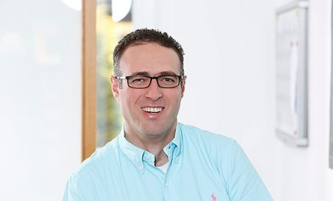
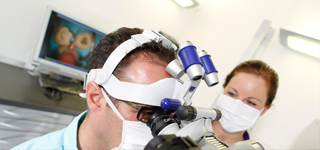
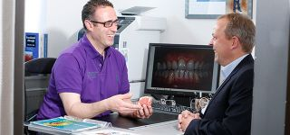
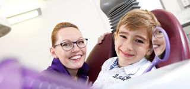

from the University of Pennsylvania, USA
Herzlich willkommen in unserer
Zahnarztpraxis in Peine.
Unser Ziel ist es, gemeinsam mit Ihnen ein Behandlungskonzept nach Ihren Wünschen und Bedürfnissen zu erarbeiten. Wir sichern Ihnen die Umsetzung des gemeinsam erarbeiteten Behandlungskonzepts auf qualitativ hohem zahnmedizinischen Niveau zu. Unser modernes ganzheitliches Praxiskonzept ist auf Zahnerhaltung, professionelle Prophylaxe, hochwertigen Zahnersatz und Wurzelkanalbehandlung (Endodontie) spezialisiert.
Endodontie
Gesunde, schöne Zähne sind ein wichtiger Bestandteil Ihrer Ausstrahlung und Ihres Wohlbefindens. Der Erhalt Ihrer natürlichen Zähne steht für uns an erster Stelle.

Konzeptioneller zahnersatz
Unter dem Begriff Zahnersatz (ZE) versteht man nicht nur das Ersetzen fehlender Zähne, sondern auch den Ersatz verloren gegangener Zahnhartsubstanz...

Prophylaxe
Gesunde Zähne, frischer Atem - gute Pflege der Zähne ist die Grundlage jeder Zahnheilkunde. Mit regelmäßiger Prophylaxe tun Sie viel für die langfristige Gesundheit Ihrer Zähne...
